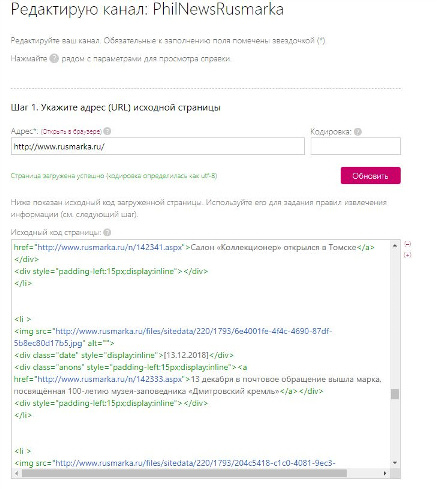
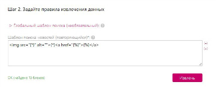
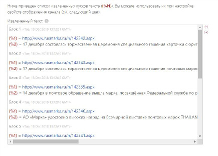
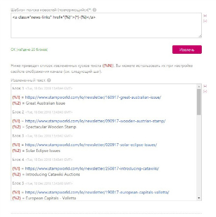

Вытекает из лабораторной работы 2.
Данный проект яляется лишь первой версией, которая демонстрирует все функции, ради чего он и создавался.
В современном мире события происходят так быстро, что часто не успеваешь сделать многое из запланированного, а если не остается времени на любимые занятие, то становится очень грустно. И, чтобы сэкономить время филателистам - им предлагается подписаться на канал в теграмме, где отсортированы самые значимые и пользующиеся популярностью у данной категории людей сайты, оповещающие либо о выходе новых марок, либо о предстоящих гашениях, либо об очередной найденной "Черной пенни".
Вместо того, чтобы тратить время на просмотр инфомации по объемным сайтам - проще прочесть все новости "одной" строкой с максимальной концентрацией в одном месте.
1. Ссылка на канал в телеграмм
2. Поэтапное выполнение:
а) Создание бота через @Bothfather

б) Доработка бота через @ManyBot


в) Приведение к адекватному виду новостей с помощью сайта feed43.com




г) Внесение созданных RSS канала в бот

д) Создание канала

е) Синхронизация канала с ботом его офоциальный запуск